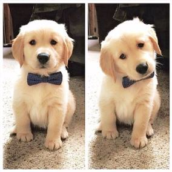
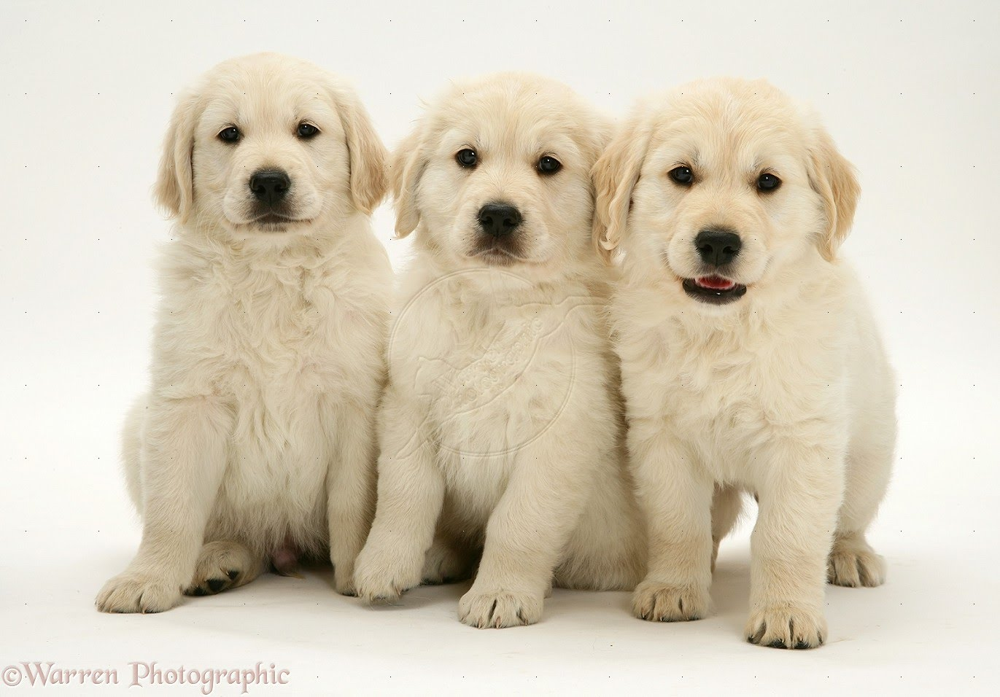

El golden retriever o labrador dorado es una raza de perro que se desarrolló en el Reino Unido, más concretamente en Escocia, alrededor de 1850. Con sus características de perro cobrador, sabueso, bloodhound y spaniel de agua, es un hábil perro de caza con aptitudes para el rastreo. Posee una disposición amigable y una actitud que lo ha convertido en la tercera raza familiar más popular —mediante registro— en los Estados Unidos,el quinto más popular en Australia,y la octava raza más popular en el Reino Unido.
El golden retriever tiene sus raíces en Escocia. A mediados del siglo XVIII, la caza de aves era muy popular entre los ricos, y se necesitaba un perro que pudiera recuperar del agua y la tierra, debido a que el terreno escocés está cubierto por lagos y ríos. Los primeros perros perdigueros se cruzaron con los mejores perros de aguas, dando lugar a la raza de perro que se conoce como golden retriever.El perro se crió por primera vez en Escocia en Guisachan cerca de Glen Affric, en la propiedad de Sir Dudley Marjoribanks —después Barón de Tweedmouth—, de las Tierras Altas escocesas. Las mejoras en las armas de fuego, durante la década de 1800, tuvieron como resultado que un número mayor de aves fueron derribadas durante la cacería a grandes distancias, y en un terreno cada vez más difícil, por lo que cada vez más aves o presas se perdían en el campo. Esto generó la necesidad de un perro especialista cobrador, debido a que el Setter, y otras razas pointer, fueron ineficaces durante el entrenamiento para la recuperación de las presas. Así, se comenzó a trabajar en la cría de un perro que desempeñara este papel que tanto hacía falta. La cruza original fue entre un perro perdiguero de color amarillo, Nous, y una perra Tweed Water spaniel, Belle.La raza de tweed water spaniel esta extinta, pero en aquél entonces era común en las áreas fronterizas. En 1868, esta cruza produjo una camada que incluía cuatro cachorros, los cuales se convirtieron en la base de un programa de mejoramiento genético que incluyó al setter irlandés, el bloodhound color arena, el perro de aguas de San Juan o Terranova menor, y dos retriever con pelaje rizado de color negro. Las líneas de sangre fueron endógamicas y también seleccionadas con exactitud por Marjoribanks apegado a su ideal de desarrollar el mejor perro de caza. Su visión incluía un perro más fuerte y poderoso que los retriever previos, uno que sería gentil y entrenable. Los perros pastores rusos no se mencionan en estos registros, ni ninguna otra raza de perros de trabajo. La ascendencia del Golden es toda de perros de caza, en línea con los objetivos de Marjoribanks. El Golden retriever es activo y poderoso y tiene una «boca blanda» para recuperar la presa mientras dura la cacería. Durante muchos años, hubo una controversia sobre qué razas se utilizaron en un principio para dar origen al Golden. En 1952, la publicación de los registros de cría de Marjoribanks —desde 1835 hasta 1890—, disipó el mito relativo de que Tweedmouth se había hecho con sus primeros perros amarillos a partir de la compra de un grupo de perros pastores en un circo ruso.Los registros indicaban que Tweedmouth adquirió a su primer retriever amarillo en Brighton, en 1865, que el perro se llamaba Nous y que procedía de una camada donde el resto de los animales eran retriever completamente negros con el pelaje rizado (Curly-Coated Retriever). La raza fue registrada por el conde de Chichester, «Nous» aparece en fotografías de 1870 como un perro grande, con un pelaje muy ondulado y de un color ni claro ni oscuro, el cual se parece mucho al golden retriever actual.
Link para foto 